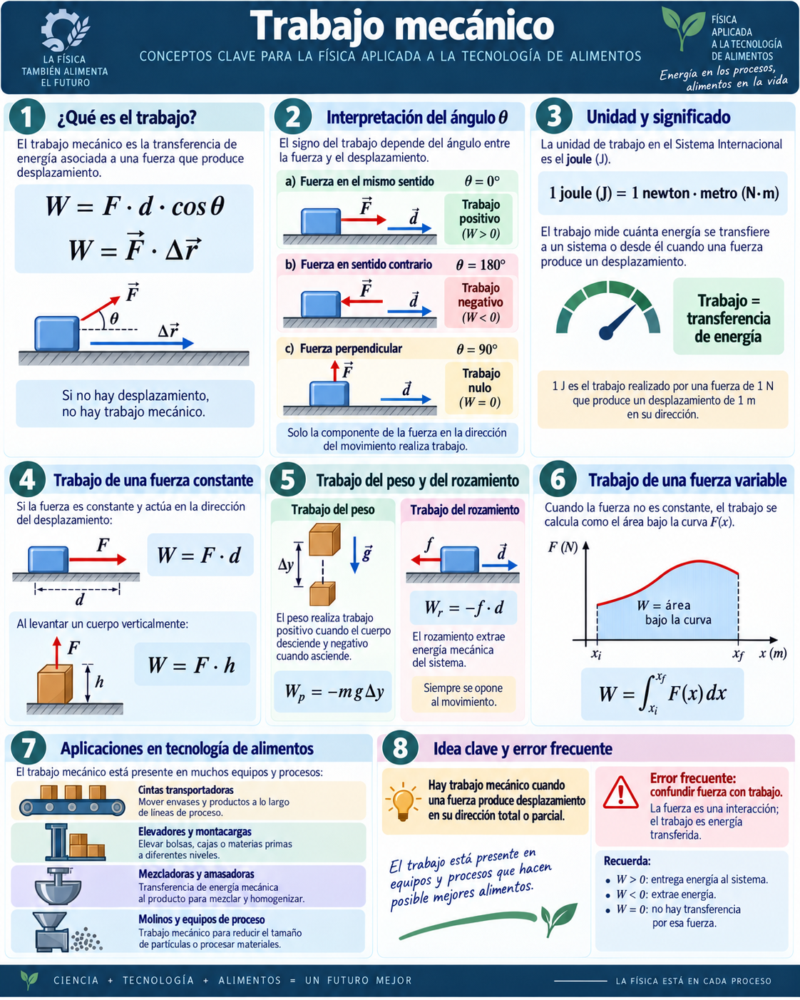
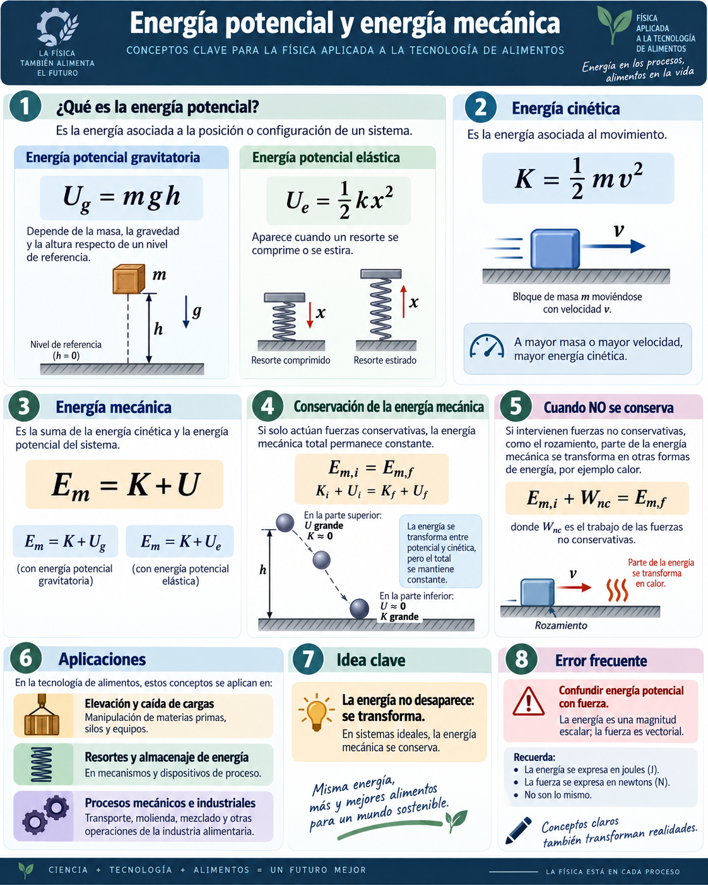
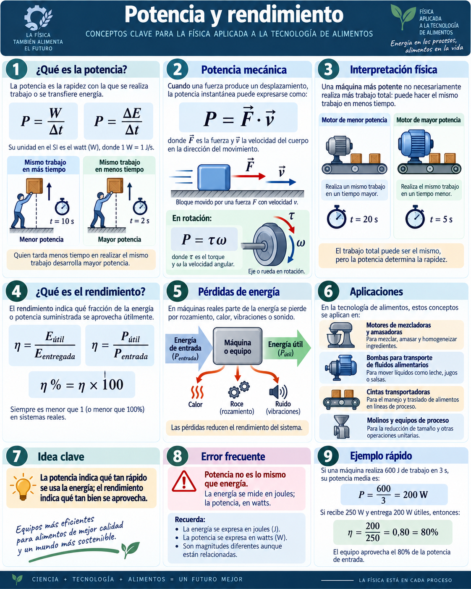

Unidad 4
Trabajo y Energía
Trabajo mecánico, fuerzas conservativas y no conservativas, energía cinética, energía potencial, energía mecánica, potencia, rendimiento, rotación y rodadura.
Mapa de la presentación
Pregunta física
¿Cómo se transfiere, almacena, transforma o disipa la energía en un sistema mecánico?
Pregunta tecnológica
¿Cómo se estima consumo, potencia útil y eficiencia en equipos de proceso?
Trabajo mecánico: idea física
El trabajo mecánico mide la energía transferida por una fuerza durante un desplazamiento.
- Si no hay desplazamiento, el trabajo mecánico sobre el cuerpo es cero.
- Si la fuerza es perpendicular al desplazamiento, tampoco realiza trabajo.
- El signo de \(W\) indica si la fuerza entrega o extrae energía.
Signo del trabajo
Trabajo positivo
La fuerza favorece el movimiento y aumenta la energía cinética si no hay otras pérdidas.
Trabajo nulo
La fuerza cambia dirección o sostiene, pero no aporta energía en la dirección del desplazamiento.
Trabajo negativo
La fuerza se opone al movimiento y reduce energía mecánica.
Unidad
Un joule mide energía transferida mecánicamente.
Infografía: trabajo mecánico

Simulación: fuerza, desplazamiento y ángulo
Trabajo de fuerza constante y variable
- Para fuerza constante paralela: el área en la gráfica \(F\)-\(x\) es un rectángulo.
- Para fuerza variable: el área debe calcularse con una integral o por aproximación gráfica.
- El signo del área conserva el sentido físico de transferencia de energía.
Fuerzas conservativas y no conservativas
Fuerzas conservativas
Su trabajo no depende del camino recorrido, sino sólo de los puntos inicial y final.
Ejemplos centrales: peso y fuerza elástica ideal.
Fuerzas no conservativas
Su trabajo depende del proceso o del recorrido. Pueden disipar energía mecánica o aportar energía externa.
Ejemplos: rozamiento, resistencia del aire, motores, frenos y pérdidas internas.

Trabajo del peso: fuerza conservativa
Cerca de la superficie terrestre, el peso realiza trabajo según el cambio vertical.
- Si el cuerpo baja: \(\Delta y<0\), entonces \(W_g>0\).
- Si el cuerpo sube: \(\Delta y>0\), entonces \(W_g<0\).
- El recorrido horizontal no modifica el trabajo del peso.
Aplicación
En elevadores de bolsas, tolvas, montacargas o transportes inclinados, elevar producto aumenta la energía potencial gravitatoria y exige aporte de energía desde el equipo.
Rozamiento y pérdidas mecánicas
Trabajo del rozamiento
Depende del recorrido total y no sólo de las posiciones inicial y final.
Balance con fuerzas no conservativas
Si \(W_{nc}<0\), la energía mecánica disminuye.
Teorema trabajo–energía cinética
El trabajo neto realizado sobre un cuerpo cambia su energía cinética.
- Trabajo neto positivo: aumenta la rapidez.
- Trabajo neto negativo: disminuye la rapidez.
- Trabajo neto nulo: la energía cinética no cambia, aunque la dirección pueda cambiar.
Energía cinética rotacional
Un cuerpo que gira almacena energía cinética en su movimiento de rotación.
El momento de inercia no depende sólo de la masa total, sino de cómo está distribuida respecto del eje.
Rotación + traslación: rodadura
Energía potencial
Potencial gravitatoria
Asociada al sistema cuerpo–Tierra. Depende del nivel de referencia elegido, pero \(\Delta U_g\) tiene significado físico directo.
Potencial elástica
Asociada al sistema masa–resorte. Tanto compresión como estiramiento almacenan energía.
Infografía: energía potencial y mecánica

Energía mecánica y conservación
La energía mecánica permite analizar transformaciones entre movimiento, altura y deformación.
Sin rozamiento ni pérdidas apreciables: \(E_m\) constante.
Con rozamiento, deformaciones o aire: parte de \(E_m\) se transforma en energía interna.
Primero identificar sistema y fuerzas; luego elegir el balance energético.
Gráfica: caída libre ideal
Potencia: rapidez de transferencia de energía
Potencia media
Unidad: \(1\,W=1\,J/s\).
Potencia instantánea
La segunda expresión es clave para ejes, poleas, molinos y mezcladoras.
Rendimiento y pérdidas en equipos reales
Un equipo eficiente transforma más energía de entrada en efecto útil.
Infografía: potencia y rendimiento

Aplicaciones y cierre
Analizar energía permite saber dónde se entrega, se almacena, se transforma y se pierde energía en un proceso.